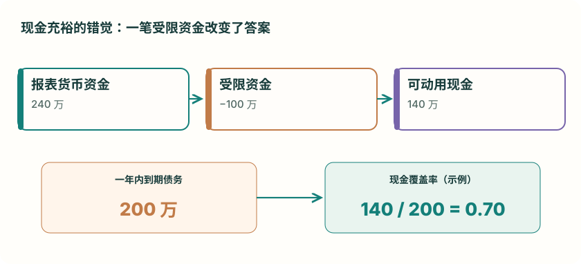
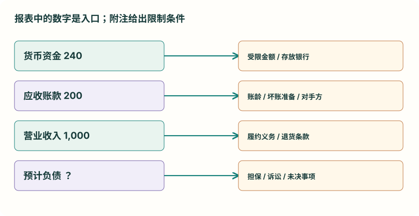

报表附注：把数字追溯到会计与合同
财务报表上的每一行数字背后都有确认原则、计量假设与交易限制。附注不是可选的背景阅读，而是检验解释能否成立的关键证据。
同样的现金余额，可能是不同的偿债能力
假设两家企业都披露货币资金 240 万元。甲企业全部可自由支付；乙企业有 100 万元用于保证金或其他限制用途。只读资产负债表，两者看起来相同；看附注后，乙企业可动用资金只有 140 万元。如果一年内到期债务为 200 万元，能用于直接覆盖短债的现金仅为 0.70 倍。这仍然不是违约预测，因为企业可能有持续经营收款、授信或再融资安排。
附注还解释应收账款账龄、减值准备、重大估计、关联交易及或有事项。根据财政部 2026 年发布、2027 年起施行的修订列报准则，附注是财务报表组成部分，且不能通过“充分披露”纠正错误的确认与计量。

按报表项目定位附注，而不是从头硬读
读附注时更有效的方法是围绕问题建立索引：存款是真是假、是否受限？收入确认条件是什么？客户会不会付款？商誉为什么没有减值？对外担保和诉讼可能带来多少义务？这些问题都能连接到具体附注，而无需一开始从第一页顺读到最后一页。

一个有用的习惯是：在笔记中记录报告期 + 报表项目 + 附注编号 + 具体说明 + 疑问 + 后续证据，这样每个判断都能回到原文，而不依赖二手摘要。
会计政策、估计和变更怎么读？
会计政策是企业在确认、计量和列报中采用的原则与方法；会计估计是在不确定条件下对金额与期间作出的判断，例如坏账准备、折旧使用寿命和可收回金额。调整原因可能来自真实商业变化，也可能改变各期利润分布，必须结合变更说明与历史比较。
| 附注主题 | 可以提的问题 | 验证方法 |
|---|---|---|
| 收入确认 | 是一次交付还是持续履约？ | 关键合同条款、履约进度 |
| 预期信用损失 | 逾期客户如何分层与计提？ | 账龄、坏账率和期后回款 |
| 固定资产折旧 | 寿命/残值变化为何合理？ | 变更原因、同业、资本开支 |
| 商誉减值 | 未来现金流假设是否审慎？ | 增长率、折现率、敏感性 |
| 关联交易 | 交易对手是否受同一控制？ | 交易性质、定价、资金往来 |
| 重大担保 | 是否存在未入表的风险敞口？ | 担保对象、期限、触发条件 |
关联交易、或有事项与期后事项
关联交易并不自动意味着利益输送：集团内部采购或资金安排有时具有商业合理性。关键是交易对手关系、定价是否公允、相关应收回款情况和与非关联方交易的差异。对于或有负债、未决诉讼、对外担保，要辨别“已在报表确认的预计负债”与“按准则仅在附注披露的风险”之间的边界，不能简单把所有或有事项统称为表外负债。
期后事项可以帮助判断报表日后发生的事件是否提供了期末情况的新证据；调整与非调整事项的分类需要结合适用准则。分析者还要留意审计报告中的强调事项或关键审计事项，但它们本身不等于发现财务舞弊。
可动用现金的压力测试
默认货币资金 240 万元、受限资金 100 万元、短期到期债务 200 万元。把受限金额提高到 160 万元后，简单现金覆盖会从 0.70 倍下降到 0.40 倍；这说明披露口径会影响分析判断，但不是完整的流动性预测。
动手调整数字
修改输入观察对应关系；这是刻意简化的教学算例，不自动覆盖税金、特殊合同安排或其他现金流调整。
计算假设受限金额完整包含在货币资金里，并把“短期到期债务”统一定义为一年内须支付的有息本金。若部分款项可解除质押、存在不可撤销授信、融资租赁或其他现金支出，需另作现金流排程。
附注审阅的最小清单
至少检查：持续经营假设、重要会计政策及变更、货币资金限制、应收账龄与损失准备、存货减值、重大长期资产估计、关联交易、担保诉讼、报告期后事项、经营分部和审计意见。应按照行业选择重点，不必假定每一条都必然异常。
自测：报表显示现金很多，什么信息能推翻“短债无忧”？
例如现金中大量为保证金或质押存款、债务集中到期、流动资金被关联方占用、经营现金连续净流出、借款契约触发提前偿付等。需查附注及真实到期时间，而不是只比较两个余额。
本章结论：附注把会计数值重新连接到合同、估计和风险；真正可靠的分析，应当能指出每个关键判断依据哪一处披露。
官方资料与适用范围
以上示例数据均为教学虚构。法规与会计准则可能按年度修订，实际分析时应以公司报告期间适用版本为准。